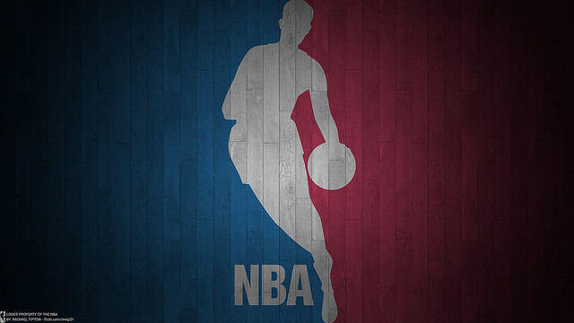
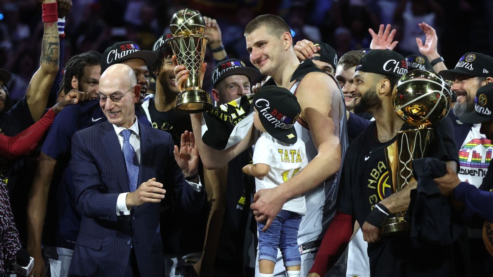

O Caminho para o troféu da temporada
Com o final da temporada regular da NBA 2023/2024, os fãs de basquete em todo o mundo se preparam para uma das fases mais emocionantes do esporte: os playoffs. Neste ano, a competição esteve repleta de surpresas, reviravoltas e performances excepcionais. Vamos dar uma olhada no que aconteceu e quem são os principais candidatos aos playoffs e possíveis favoritos ao título.
O Desenrolar da Temporada Regular
A temporada regular foi marcada por uma competição acirrada em todas as conferências. Times que estiveram consistentemente no topo das classificações enfrentaram desafios de equipes emergentes e renovações inesperadas. Lesões, negociações e o desempenho dos calouros adicionaram camadas de drama e emoção a cada jogo.
Candidatos aos Playoffs
Conferência Leste:

Brooklyn Nets: Com uma formação estelar liderada por estrelas como Kevin Durant e Kyrie Irving, os Nets estão entre os principais candidatos ao título da conferência.
Milwaukee Bucks: Os atuais campeões da NBA, liderados por Giannis Antetokounmpo, continuam sendo uma força dominante na conferência e estão prontos para defender seu título.
Philadelphia 76ers: Com Joel Embiid liderando o caminho, os 76ers têm mostrado consistência ao longo da temporada e são fortes candidatos aos playoffs.
Conferência Oeste:

Los Angeles Lakers: Mesmo com lesões e desafios, os Lakers, liderados por LeBron James e Anthony Davis, têm potencial para chegar longe nos playoffs.
Golden State Warriors: O retorno de Stephen Curry e a adição de novos talentos colocaram os Warriors de volta à briga pelo título.
Phoenix Suns: Finalistas da temporada passada, os Suns estão determinados a ir ainda mais longe este ano, com Devin Booker e Chris Paul liderando a equipe.
Possíveis Favoritos ao Título

Brooklyn Nets: Com um trio de estrelas formidável e uma profundidade de elenco impressionante, os Nets são considerados por muitos como os favoritos ao título da NBA nesta temporada.
Los Angeles Lakers: Apesar dos altos e baixos durante a temporada regular, os Lakers têm uma equipe repleta de experiência e talento, o que os torna uma ameaça real nos playoffs.
Milwaukee Bucks: Como os atuais campeões, os Bucks têm a vantagem da experiência e do entrosamento. Com Giannis liderando a equipe, eles têm todas as chances de conquistar outro título.
Phoenix Suns: Depois de uma incrível corrida até as finais na temporada anterior, os Suns estão determinados a provar que não foi uma coincidência. Com um jogo coletivo sólido e liderança experiente, eles podem surpreender novamente.
À medida que a temporada regular chega ao fim, a emoção e a expectativa só aumentam para os playoffs da NBA. Com uma mistura de equipes consolidadas e novas forças emergentes, os fãs podem esperar uma competição intensa e cheia de reviravoltas. Quem irá reinar supremo e levantar o troféu da NBA nesta temporada? Só o tempo dirá, mas uma coisa é certa: os próximos meses prometem ser inesquecíveis para os amantes do basquete.